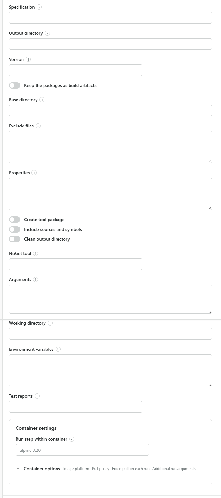

NuGet Pack
Builds a .nupkg package from a .nuspec or project file with nuget pack, and can keep it as a build artifact.
When to use it
Use it to package shared game libraries, such as your gameplay framework, so other projects can use them from a feed.
How to set it up
- Open the build configuration and click Settings › Build Steps.
- Click Add build step. Type
NuGet Packin Filter step types if you like, then click the NuGet Pack tile (group Packages). - Type a Step name, for example
Pack framework. - Fill in the fields described below.
- Optional: set Execute step, Conditions and Retry on failure. See The steps list and the step editor.
- Click Save.

Every field
| Field | What it does | Default | Example |
|---|---|---|---|
| Specification | A .nuspec or a project file, relative to the working directory. | Empty (required) | Packaging/Framework.nuspec |
| Output directory | Passed as -OutputDirectory. Empty writes the package to the working directory. | Empty | out |
| Version | Passed as -Version. Empty uses the version in the specification. | Empty | 1.4.%build.number% |
| Keep the packages as build artifacts | Archives the .nupkg files of the output directory with the build, also after a failed run. | Off | On |
| Base directory | Passed as -BasePath: the folder the files in the specification are looked up in. Empty uses the working directory. | Empty | Binaries |
| Exclude files | One pattern per line, each passed as -Exclude. | Empty | **/*.pdb |
| Properties | One Name=value per line, joined with semicolons into the single -Properties argument. A line cannot hold a semicolon. | Empty | Configuration=Release |
| Create tool package | Passed as -Tool. | Off | Off |
| Include sources and symbols | Passed as -Symbols: a symbols package is built with the sources. | Off | On |
| Clean output directory | Empties the output directory before packing. It must be a folder inside the working directory, never the working directory itself, so Output directory is required. | Off | On |
| NuGet tool | Path of nuget.exe. Empty takes nuget from the PATH. | Empty | C:\tools\nuget.exe |
| Arguments | One argument per line, such as -Symbols. Pass a secret through the environment. | Empty | -NoDefaultExcludes |
| Working directory, Environment variables, Test reports, Run step within container | The same in every runner. See Fields every runner has. |
A worked example
Package the gameplay framework. Step name Pack framework, Specification Packaging/Framework.nuspec, Output directory out, Version 1.4.%build.number%, tick Keep the packages as build artifacts and Clean output directory.
What you see when it runs
The console shows $ nuget pack … and Successfully created package. The package Framework.1.4.57.nupkg appears under Artifacts of the build.
Problems and fixes
| Problem | What to do |
|---|---|
| The NuGet Pack step has no specification file | Fill in Specification. |
| A property of the NuGet Pack step is not Name=value, or holds a semicolon | Use one Name=value per line, with no semicolons. |
| The NuGet Pack step cleans its output directory but has none | Set Output directory to a folder inside the working directory. |
| The output directory … is not a folder inside the working directory, so it is not cleaned | Use a relative folder such as out. |